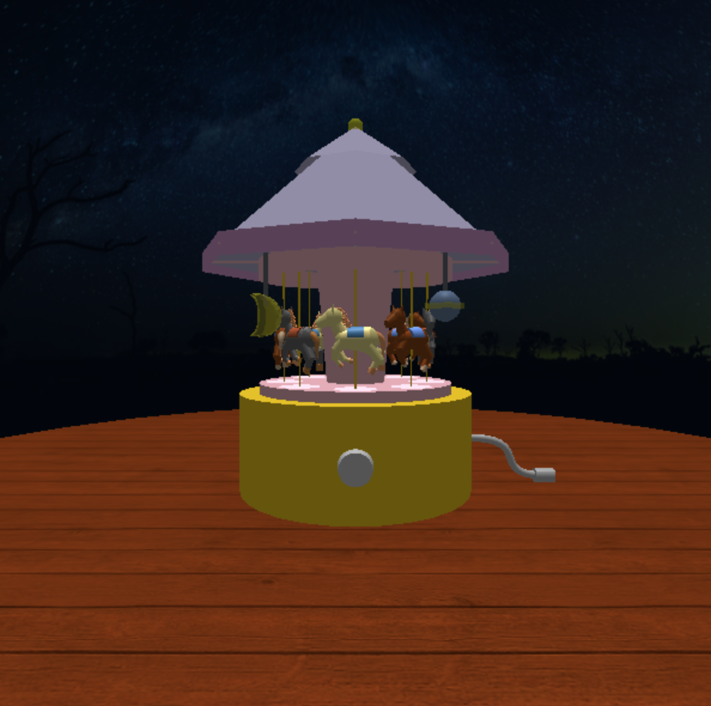
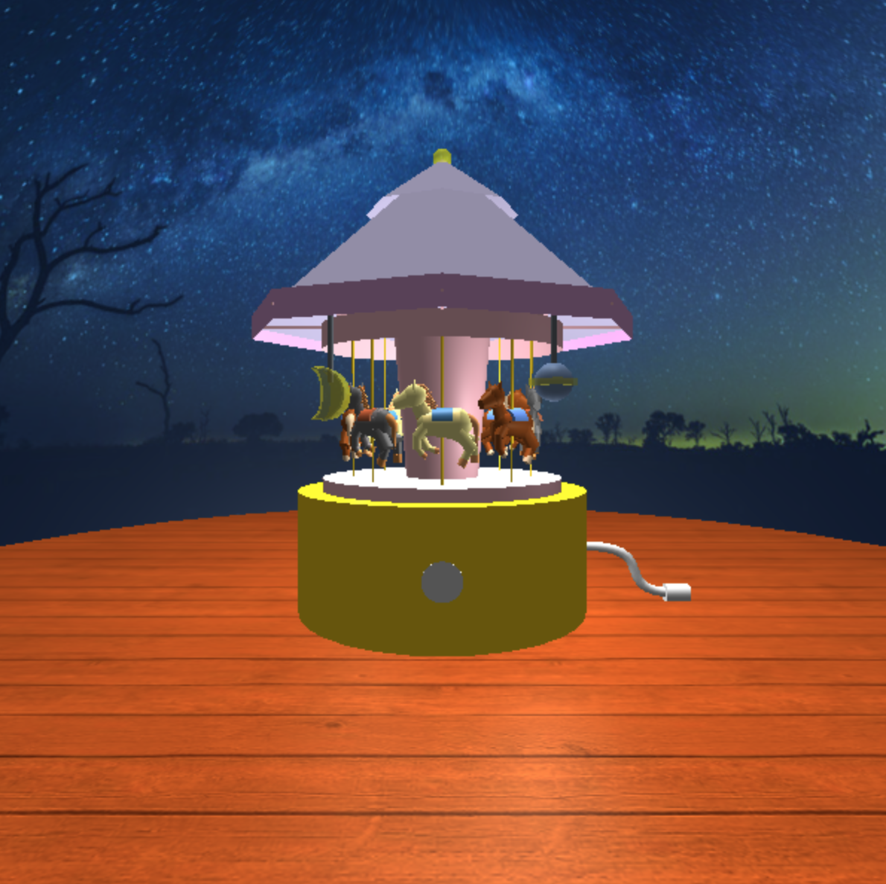
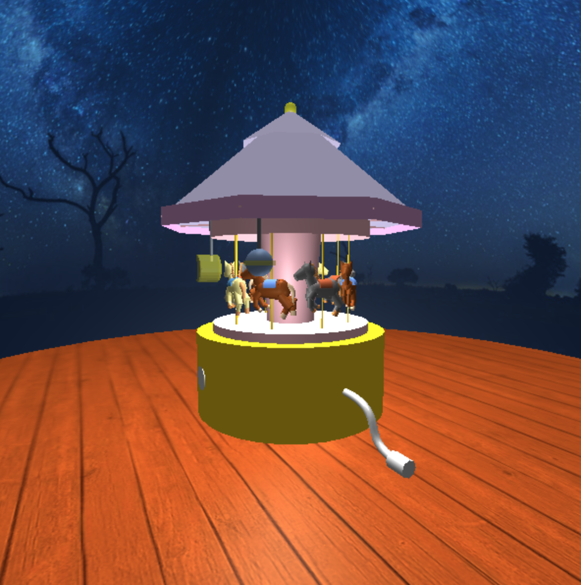

The goal of our project was to utilize computer graphics concepts to create a scene with a music box and texture mapped backgrounds. Our program features a carousel music box created from complex geometries, along with user interaction and animation (e.g. spinning). Some other components include a wooden floor and sky dome background, ambient and directional lights, and point lights and spotlights inside the carousel.



We used a variety of curves, surfaces, and geometries to model our scene. In addition, we implemented a hierarchical structure with creating meshes, adding them to objects, and building on top of these objects. To further challenge ourselves, we used some Three.js geometries that required us to create our own paths or Bezier curves, which are described in further detail under the Curved Lines or Surfaces section.
We used Phong material for all of our components, and added shininess and specular properties to the handle and music box base to create a metallic appearance. For lighting, we used generic ambient and directional lights positioned at the top of the scene, a spotlight for each horse, and point lights for the light decorations on the tent.
Code snippet of math calculations and adding a point light to the planet decoration:
var sin30 = decParams.decHeight/2 * Math.sin(Math.PI/6);
var cos60 = decParams.decHeight/2 * Math.cos(Math.PI/3);
planetLight1 = new THREE.PointLight("white", 0.2, 0, 2);
planetLight1.position.set(carouselParams.tentRadius/2 + cos60, carouselParams.platformHeight + carouselParams.centerHeight
+ decParams.decHeight/2, carouselParams.tentRadius/2 - sin30);
We used a perspective camera and established the vertical field of view, aspect ratio, near, and far plane parameters. Additionally, we used the lookAt function to initially face the camera at a certain point in the scene. Setting up a camera was essential, as the raycaster in our user interaction component depended on both the camera and mouse position.
We used loaded images to texture map for the wooden floor and the sky background. The wooden floor uses repeated wrapping, and the sky background uses mirror repeated wrapping to create a smooth transition between the repeated sky images.
Code snippet of texture mapping for the sky background:
skyMaterial = new THREE.MeshPhongMaterial({
color: "lightblue",
map: textures[1],
side: THREE.DoubleSide
});
textures[1].wrapS = THREE.MirroredRepeatWrapping;
textures[1].repeat.set(2, 1);
textures[1].needsUpdate = true;
such as TubeRadialGeometry for the horses' manes, ExtrudeGeometry for the moon light, and TubeGeometry for the handle.
Code snippet of using Bezier curves and TubeGeometry to create a handle geometry:
var path = new THREE.CubicBezierCurve3(
new THREE.Vector3(40, -20, 0),
new THREE.Vector3(10, -20, 0),
new THREE.Vector3(35, 0, 0),
new THREE.Vector3(0, 0, 0)
);
var handleGeom = new THREE.TubeGeometry( path, 20, 2, 8, false );
The light bulb at the top of the tent and light decorations make use of the opacity property to create a more realistic glass appearance.
We implemented user interaction in multiple areas. For example, by clicking the light switch, the switch moves and the user can turn on and off the carousel light decorations. This was accomplished by declaring the lights controlled by the light switch as global variables, then using multiple helper functions to control their presence and visibility in the scene. Users can also interact with the music box upon clicking the spinning handle to trigger the animation, which is explained in more detail under the Animation section.
Code snippet of light switch user interaction:
raycaster.setFromCamera(mouse, camera);
var intersects = raycaster.intersectObjects(scene.children, true);
if (intersects.length > 0) {
if (intersects[0].object.name == "switch") {
changeLight();
renderer.render(scene, camera);
};
}
To model a real music box, users can press 'w' to "wind up" the mechanism, allowing the carousel to freely spin upon releasing the handle. This involved 3 variables, windStepCycle, currentStep, and total. While incrementing the currentStep and total variables by one with the advancement of each frame, each time the user winds up the handle, the handle and carousel slowly rotate counter-clockwise until reaching a certain number of frames (established as our windStepCycle constant). Then, pushing 'r' emulates releasing the handle, causing the handle and carousel spin faster and clockwise until the total variable is reset to 0.
Code snippet of key wind-up animation:
oneStep();
if (spinParams.step > spinParams.wind) {
console.log(spinParams.wind);
stopAnimation();
} else {
animationID = requestAnimationFrame(animate);
}
Some challenges we faced were creating Bezier curves for complex components, such as the handle, horses, and the light decorations. To overcome these difficulties, we intially added control points to the scene to identify the points associated with the vectors we created. We also had trouble with using the Python-based web server to load our images, but were able to resolve the issue through installing the appropriate dependencies. Lastly, for user interaction, we initially struggled with reversing the animation of the handle and spent much time deciding on the variables to keep track of the frame rate.
To extend our knowledge beyond what we learned in the class, we created complex Bezier curves and surfaces, especially for the horses, to achieve the shapes we desired. Additionally, we implemented all eight major graphics concepts in our project, from user interaction to animation.
For our final iteration, we plan to improve the user interaction and animation. We are currently trying to increase the mouse position accuracy for our click events, especially after the user moves the screen, and are searching for a better solution than using a stationary camera. Also, we would like to add music and audio coupled with our animated scene, as well as shadows to complete the realistic look. Lastly, we hope to receive feedback from our presentation to further enhance our final product.